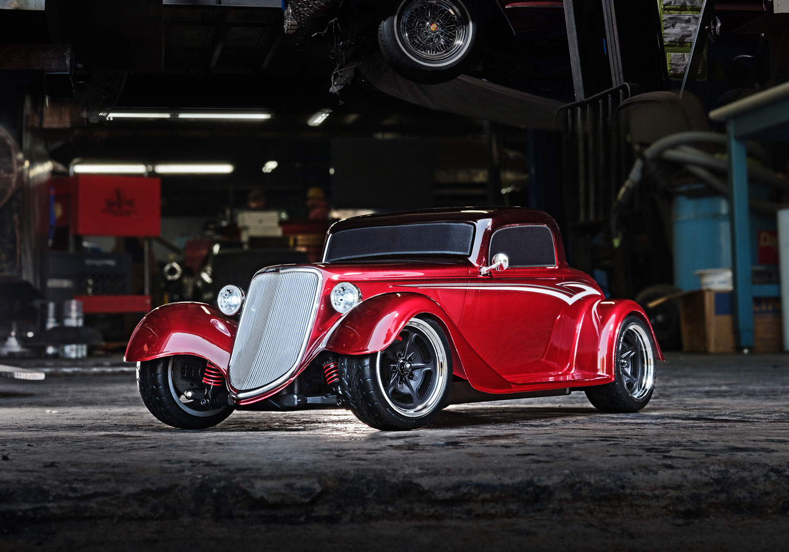

1933 Hot Rod RC Vehicle: Parametric Redesign and Performance Optimization
This project involved the complete digital re-engineering and performance optimization of a 1933 Hot Rod RC vehicle using Siemens NX. The design was fully parametric and morphable, enabling rapid adjustment of key dimensions—from body proportions to minute features like screws and shell details. My primary responsibilities included leading all surface modeling for the body shell, as well as conducting extensive structural and aerodynamic simulations. The main goal was to improve performance by reducing weight, minimizing drag, and ensuring structural integrity across all components.
Through advanced surface modeling, I developed a high-fidelity shell with scalable parameters, allowing the team to test different design scenarios and constraints. Using topology optimization and FEA, we achieved significant mass reductions in parts like wheels, suspension arms, and chassis supports, all while maintaining or improving strength and stiffness. Aerodynamic performance was rigorously tested through CFD analysis, resulting in a redesigned shell that lowered drag without compromising the iconic Hot Rod aesthetic. Every change was validated in simulation before integration into the final assembly, delivering a lighter, faster, and more customizable RC vehicle.
Key Features & Contributions:
- Fully morphable, parametric RC vehicle design—from body shell to fasteners—enabling rapid adaptation for different scenarios.
- High-precision surface modeling and complex assembly organization in Siemens NX.
- Topology optimization and FEA-driven mass reduction for critical components while maintaining structural integrity.
- Aerodynamic shell redesign validated by CFD, achieving measurable drag reduction at simulated driving speeds.
- Integration of optimized geometry, material selection, and real assembly data for comprehensive digital-to-physical validation.
My Key Contributions:
- Served as surface modeling and simulation lead, responsible for the entire body shell design and refinement.
- Performed all CFD analysis to evaluate and minimize aerodynamic drag on shell designs and modifications.
- Conducted FEA and topology optimization for mass reduction and strength improvement across wheels, suspension, and chassis parts.
- Managed parametric modeling workflows, ensuring all vehicle components could be quickly morphed for scenario testing.
- Collaborated closely with teammates to integrate all subsystems, document design iterations, and troubleshoot complex CAD errors.